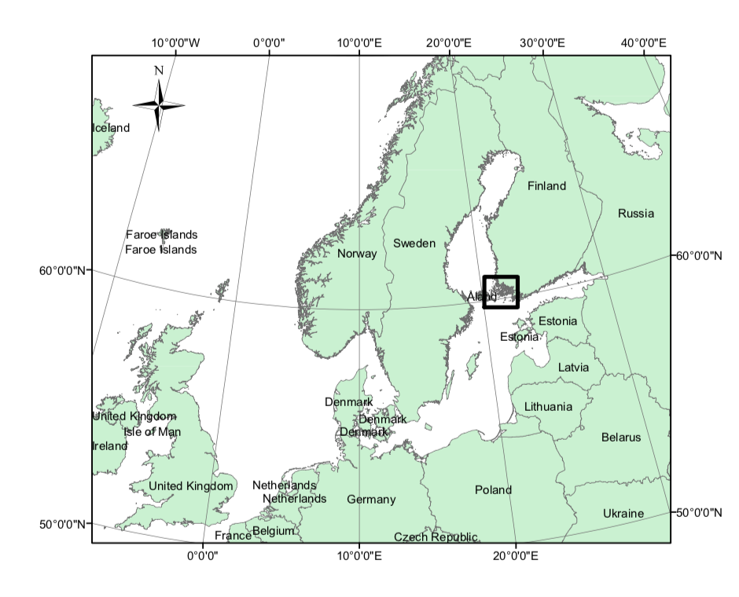
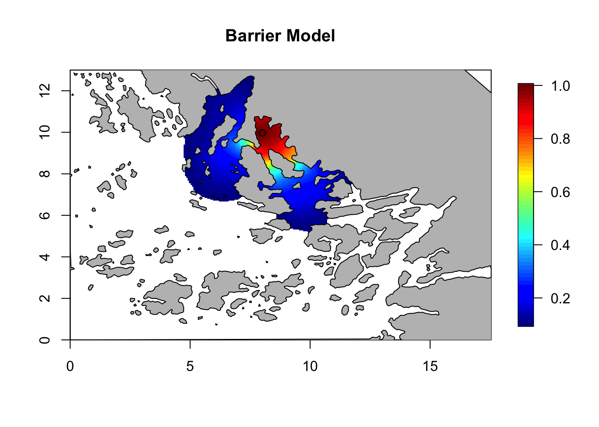
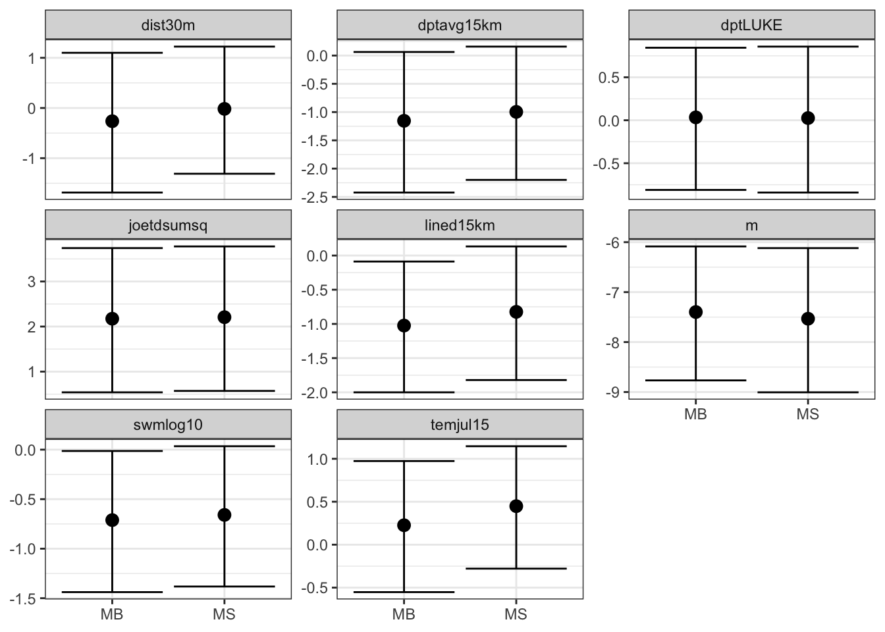
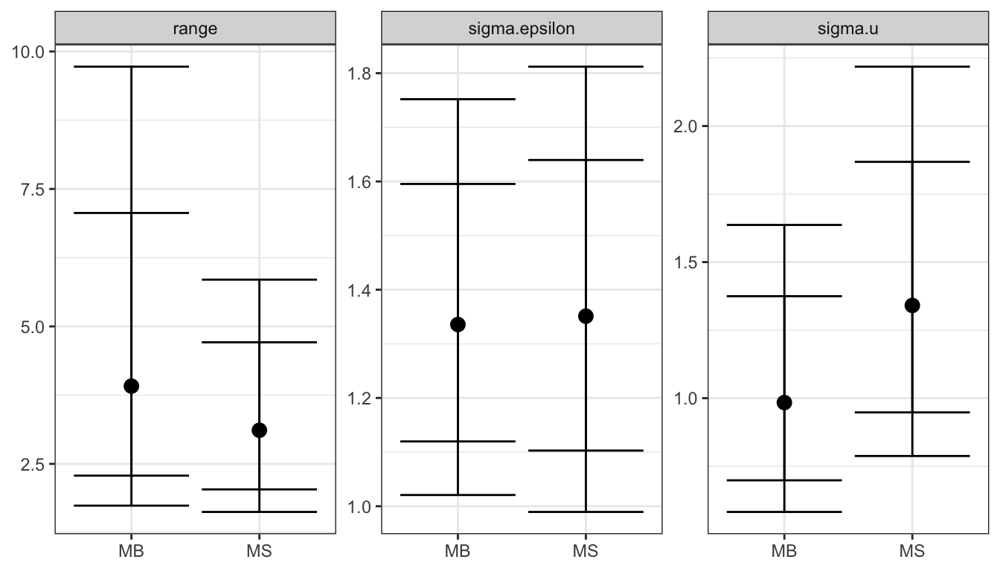

Barrier Model applied to the Archipelago Data
Francesco Serafini
Haakon Bakka
updated 16 March 2021
1 About
In this topic we show how to apply the Barrier model to a real data problem, with fish in an Archipelago (coast with many islands). These models arise naturally wherever physical, geographical or topological barriers have to be taken into account. There are many examples of barriers: land for aquatic animals (and vice versa), industrial areas for human population, or cities and roads for animals. In this topic we also compare the barrier model to the classical stationary model.
1.1 Packages
library(INLA)
library(fields)
library(rgeos)
library(ggplot2)2 Spatial modelling and the Barrier model
2.1 Why go spatial?
Whenever we are dealing with observations located in space,
especially in species distribution modeling, environmental conditions
may not be sufficient to explain the variability of the observations. In
other words the measurements, given the covariates, are not independent.
Introducing a spatial random effect mitigates this situation.
For example, think of a habitat that is optimal for two different
species. In this case there may be competition for living in that
habitat and one of the species will be forced to move to a less optimal
habitat. A model with only covariates cannot properly embody this
structure, but a spatial random effect can.
2.2 How to go spatial
The most used way to take into account the spatial dependencies between observations is to introduce in the model a spatial random effect, also known as a Gaussian Random Field (GRF), a Gaussian Field (GF), or a Spatial Gaussian Field (SGF). The main characteristic of this model is a covariance structure which depends on the spatial locations of points. The spatial correlation is assumed to be stronger for points close to each other than for points far away from each other. Given that, there are two main situations:
The correlation is a function only of the distance between points. The correlation between points propagates on the shortest path between them. In this case we are talking about stationary Gaussian random fields
The correlation function changes depending on the locations of the considered points. The correlation propagates accordingly with the topology of the study area. Here we are talking about non-stationary Gaussian random fields
2.3 Barrier Model
The Barrier model, which we are going to explain in detail in the
next sections, provides a non-stationary Gaussian random field. In
species distribution modeling, physical barriers such as islands,
mountains, cities, roads and lakes could pose obstacles for the movement
of species. Hence, the spatial correlation should not follow the
shortest path; it cannot propagate across these obstacles but should
travel around them.
The following animation is a simple example. Think of an individual
which moves around in a given space. When he meets a barrier it is
likely that the distribution of his possible locations is affected by
this barrier. The probability of being on the other side of tha barrier
should be small, unless he can get there by going around. Note that with
a stationary Gaussian random field the distribution doesn’t change at
all when the individual moves around.

Code for a variation on this example can be found in Simulation and inference with the Barrier model.
3 Case study
The case study here is modelling fish larvae species distribution in the Finnish archipelago sea. This example is very relevant because the fish larvae live near the coast and the study area is an archipelago, with many barriers.
Notice: The code and results on this webpage is a reproduction of the results in (Bakka et al. 2016).
3.1 Area of Interest
The study area is located in the Archipelago Sea on the south-west coast of Finland. It is part of the Baltic Sea which is one of the largest brackish water area of the world and it holds the reproductive process of many fish species. Hence, these types of study areas are important in marine spatial planning and fisheries managment.

This figure is from (Bakka et al. 2016).
3.2 Data
For a description of the data see (Kallasvuo, Vanhatalo, and Veneranta 2016). Data collection was funded by VELMU and Natural Resources Institute Finland (Luke).
3.3 Response variables
The data is on three species of fish, smelt (Osmerus eperlanus), perch (Perca fluviatilis) and pikeperch (Sander lucioperca). They are freshwater fish but they reproduce in the coastal areas, close to river outlet. We are interested in the early-stage larvae, and have recorded the abundance in 198 locations. In this topic we focus only on the smelt, but the other species have a similar behaviour.
This is how the observations look like.

This figure is from (Bakka et al. 2016).
3.4 Covariates
We include in the model six environmental variables. All of them, except the RiverFlow, were centered and scaled. RiverFlow is treated as a factor, 0 represents the values less or equal 0.08 and 1 represents values greater than 0.08.
In the following table you find a brief description of the covariates.
This table is from (Bakka et al. 2016).
3.5 Model
First Level
We model the number of larvae \(y_i\) in a given location \(s_i\) for \(i = 1,...,n\). Since this is a count variable we use the Poisson distribution. The observations are assumed to be independent given the latent variable \(\vec{\eta}\). The \(\vec{x_i}\) represent the covariates vector for \(i\)-th observation and \(z_i\) is fixed sampling effort.
\[ y_i|\eta_i\sim {\rm Poisson}(z_ie^{\eta_i})\]
\[\eta_i=\beta_0+\vec{x}_i\vec{\beta}+u(s_i)+\epsilon_i\]
Where \(\epsilon\) is an iid random
effect and \(u(s_i)\) a Gaussian random
field that could be either stationary or non-stationary. We will use
both in the next sections and compare the results.
We model the local dependencies (e.g. local aggregation behavior,
sampling variability) via the iid random effect \(\epsilon\). The long range dependency
(e.g. diffusion and spatial aggregation), which is more structured, is
modelled using the Gaussian random field \(u(s)\). For more details see (Bakka et al. 2016) Section 3.
Second Level
A diffuse prior has been chosen for the intercept \(\beta_0\) and the coefficients vector \(\beta\). The independent random effect \(\epsilon\) is simply a vector of independent Gaussians. The spatial random effect \(u(s_i)\) belongs to the Matérn family and its covariance structure is defined uniquely by two parameters: the range \(r\) and the standard deviation \(\sigma_u\). Here, \(\sigma_u\) represents the magnitude of the spatial effect. The parameter \(r\) changes the length scale at which we are studying the dependencies. Two points that are \(r\) units apart have a covariance close to 0.13.
\[\beta_j\sim \mathcal{N}(0,1000)\]
\[\beta_0\sim \mathcal{N}(0,1000)\]
\[\epsilon_i\sim\mathcal{N}(0,\sigma_\epsilon^2)\]
\[u(s_i) \sim GRF(r, \sigma_u)\]
Stationary vs. Barrier
The difference between the styationary and Barrier model is in the \(GRF\) chosen. For a precise definition see (Bakka et al. 2016).
Third Level
The third level describes priors for the hyper-parameters of the two
random effects.
We use the following priors:
\[\pi(\sigma_\epsilon)\sim \lambda_\epsilon e^{-\lambda_\epsilon \sigma_\epsilon}\]
\[\pi(\sigma_u)\sim \lambda_0 e^{-\lambda_0 \sigma_u}\]
\[\pi\left(\frac{1}{r}\right)\sim \lambda_1 e^{-\lambda_1 \frac{1}{r}}\]
The choice of \(\lambda\)’s dependens on the scale of the problem and the user’s degree of shrinkage. In general smaller values of \(\lambda\) implies a larger variance of the random effect, and the importance of the fixed effects is often reduced. For this case we define \(\lambda_\epsilon= \lambda_0 = 1.5\) and \(\lambda_1 = 20.8km\). The appendix of (Bakka et al. 2016)provides a more detailed justification.
4 Load data
We first define some functions and objects that will be used later, and prepare the data.
4.1 Download data
An internet connection is required, unless you have already downloaded the repository.
dir.create("data/")
download.file(url = "https://haakonbakkagit.github.io/data/WebSiteData-Archipelago.RData", destfile = "data/WebSiteData-Archipelago.RData")4.2 Load data
## Load data
## After you have downloaded/saved the file
load(file = "data/WebSiteData-Archipelago.RData")
## What is loaded
# - poly.water is our study area
# - df is our dataframe to be analysed
# - dat is the orginial dataframe
str(poly.water, 1)## Formal class 'SpatialPolygons' [package "sp"] with 4 slotsThe file contains:
poly.water: is a SpatialPolygons representing the study area.
More details on Polygons [link polygon]df: the working data frame
dat: another data frame containing the original data
After importing the data, we create the variable of interest. As we said before the analysis will be focused on the smelt distribution.
df$y = df$y.smelt5 Implementation (Utilities)
5.1 Mesh
First of all we have to build a mesh; a triangulation on the study
area that allows us to approximate the random field.
For more detail, see Mesh Creation including
Coastlines.
## Set the max length of triangles edge
max.edge = 0.6
## Set the length of the boundary extension
bound.outer = 4.6
## Build the mesh
mesh = inla.mesh.2d(boundary = poly.water,
loc=cbind(df$locx, df$locy),
max.edge = c(1,5)*max.edge,
cutoff = 0.06,
offset = c(max.edge, bound.outer))The blue line is the boundary representing the barriers and the red points are the sampling location.
plot(mesh, lwd=0.5)
points(df$locx, df$locy, col="red")5.2 Stack
In our model we have a complex linear predictor. One of the main problems is that it includes a spatial random effect defined over the mesh points and covariates observed a different locations which are not included in that set. The first step is to build a matrix \(A\) that project the random field on the desired locations.
## Locations for observations
locations = cbind(df$locx, df$locy)
## Projection matrix
A.i.s = inla.spde.make.A(mesh, loc = locations)Just to convince the reader that it works properly. Check the dimensions
cat('Dimension of A: ', dim(A.i.s), '\n')
cat('Number of mesh points: ', mesh$n, '\n')
cat('Number of locations: ', dim(locations)[1], '\n')## Dimension of A: 198 6538
## Number of mesh points: 6538
## Number of locations: 198Next, we build a special object: the Stack object. It is build using the \(\texttt{inla.stack()}\) function, with input
data : the data and the exposure/offset
effect: a list containing all the effects: fixed and random. For the random effects is sufficient to specify a index vector of locations. For the fixed effects we specify a dataframe containing the covariates.
A: a list containing the above projection matrix, and just a \(1\) if the corresponding variable is recorded on the data locations.
stk <- inla.stack(data=list(y=df$y, e=df$exposure), # data and offset
effects=list(s= 1:mesh$n, # spatial random effect
iidx=1:nrow(df), # iid random effect
data.frame(m=1, df[ ,5:11])), #covariates
A=list(A.i.s, 1, 1), # projection matrix
remove.unused = FALSE, tag='est')For more details and examples, see the book by Cameletti et al, chapter 6.
6 Implementation (Models)
We create a list of lists to store the results for the four models that we are going to implement:
Stationary with/without covariates
Barrier with/without covariates
## Overall list
M = list()
# Each model is a list itself
M[[1]] = list()
M[[1]]$shortname = "stationary-no-cov"
M[[2]] = list()
M[[2]]$shortname = "stationary-all-cov"
M[[3]] = list()
M[[3]]$shortname = "barrier-no-cov"
M[[4]] = list()
M[[4]]$shortname = "barrier-all-cov"6.1 Stationary Model
Start defining the spatial random fields. We also need to specify the prior for the hyper-parameters \(r\) and \(\sigma_u\). In particular, the prior on \(r\) is calibrated to have a median around half of the study area. The hyper-parameters of \(\sigma_u\) are choosen in order to have probability \(0.01\) to have values greater than \(3\).
## Prior for range uses half the study area, which is
## ... approximately 0.5*diff(range(df$locy)) = 5.8435
spde = inla.spde2.pcmatern(mesh, prior.range = c(6, .5), prior.sigma = c(3, 0.01))Create another object for the iid random effect. The prior is only on \(\sigma_{\epsilon}\) and it is the same used before for \(\sigma_u\).
hyper.iid = list(prec = list(prior = 'pc.prec', param = c(3, 0.01))) Now we define the formulae that we will use for the stationary case (both with and without covariates). The \(-1\) in front of the formula means that we are not considering an intercept, but actually we are including it with the term \(m\), that is a vector of only \(1\)’s. The reason for this is to have the intercept (\(m\)) as part of the stack object.
## No covariates
M[[1]]$formula = y ~ -1 + m +
f(s, model=spde) + # spatial random effect
f(iidx, model="iid", hyper=hyper.iid) # iid random effectFor the model with covariates the formula is built in two steps.
First, the covariates are specified, second, the random effects are
added. Here we show a useful trick for when there are many covariates,
using paste and as.formula.
## Covariates
M[[2]]$formula = as.formula(paste( "y ~ -1 + ",paste(colnames(df)[5:11], collapse = " + ")))
## Add random effect
M[[2]]$formula = update(M[[2]]$formula, .~. + m +
f(s, model=spde) +
f(iidx, model="iid", hyper=hyper.iid))Lets check how the formulae look like:
print(M[[1]])## $shortname
## [1] "stationary-no-cov"
##
## $formula
## y ~ -1 + m + f(s, model = spde) + f(iidx, model = "iid", hyper = hyper.iid)print(M[[2]])## $shortname
## [1] "stationary-all-cov"
##
## $formula
## y ~ dptLUKE + dptavg15km + dist30m + joetdsumsq + lined15km +
## swmlog10 + temjul15 + m + f(s, model = spde) + f(iidx, model = "iid",
## hyper = hyper.iid) - 16.2 Barrier Model
The specification of the spatial random effect is a little bit trickier than before. The point is that we have to define a Polygon representing our study area with some holes which account for the barriers.
# Number of triangles of the mesh
tl = length(mesh$graph$tv[,1])
## Initialize a matrix containing the central coordinates of each triangle's
posTri = matrix(0, tl, 2)
for(t in 1:tl){
# Take the vertex of triangles
temp = mesh$loc[mesh$graph$tv[t, ], ]
# Compute center of each triangle
posTri[t,] = colMeans(temp)[c(1,2)]
}
## Convert to Spatial Points
posTri = SpatialPoints(posTri)
## Intersection between mesh points and sea points contained in
## ... poly.water
normal = over(poly.water, posTri, returnList=T)
## Remove the sea triangles from all triangles to obtain the barrier ones
normal = unlist(normal)
barrier.triangles = setdiff(1:tl, normal)
## Build a barrier, this obj contains all the polygons composing the islands
## This will be used just for plotting
poly.barrier = inla.barrier.polygon(mesh, barrier.triangles)Once that we have found the barrier triangles we can build our model very easily using R-INLA. The function is very similar to the one used for the stationary model, we add just an option specifying the barrier triangles. The priors for the hyper-parameters are the same.
barrier.model = inla.barrier.pcmatern(mesh, barrier.triangles =
barrier.triangles,
prior.range = c(6, .5),
prior.sigma = c(3, 0.01))We build the formulae exactly as before, but with the new GRF.
## No Covariates
M[[3]]$formula = y~ -1 + m +
f(s, model=barrier.model) +
f(iidx, model="iid", hyper=hyper.iid)
## With Covariates
## Only covariates
M[[4]]$formula = as.formula(paste( "y ~ -1 + ",paste(colnames(df)[5:11], collapse = " + ")))
## Add random effects
M[[4]]$formula = update(M[[4]]$formula, .~. +m +
f(s, model=barrier.model) +
f(iidx, model="iid", hyper=hyper.iid))Lets check them:
print(M[[3]])## $shortname
## [1] "barrier-no-cov"
##
## $formula
## y ~ -1 + m + f(s, model = barrier.model) + f(iidx, model = "iid",
## hyper = hyper.iid)print(M[[4]])## $shortname
## [1] "barrier-all-cov"
##
## $formula
## y ~ dptLUKE + dptavg15km + dist30m + joetdsumsq + lined15km +
## swmlog10 + temjul15 + m + f(s, model = barrier.model) + f(iidx,
## model = "iid", hyper = hyper.iid) - 17 Plotting Priors
In this section we show how to obtain some nice plots which highlight the difference between the stationary model and the Barrier model (as prior models, before they are fitted to data). Before anything else we define a function to find the autocorrelatiions given a precision matrix \(Q\), a location and a mesh.
The following code is from https://haakonbakkagit.github.io/btopic105.html.
local.find.correlation = function(Q, location, mesh) {
## Vector of standard deviations
sd = sqrt(diag(inla.qinv(Q)))
## Create a fake A matrix, to extract the closest mesh node index
A.tmp = inla.spde.make.A(mesh=mesh,
loc = matrix(c(location[1],location[2]),1,2))
## Index of the closest node
id.node = which.max(A.tmp[1, ])
print(paste('The location used was c(',
round(mesh$loc[id.node, 1], 4), ', ',
round(mesh$loc[id.node, 2], 4), ')' ))
## Solve a matrix system to find the column of the covariance matrix
Inode = rep(0, dim(Q)[1])
Inode[id.node] = 1
covar.column = solve(Q, Inode)
# compute correaltions
corr = drop(matrix(covar.column)) / (sd*sd[id.node])
return(corr)
}And create a function just to plot.
local.plot.field = function(field, mesh, xlim, ylim, ...){
# Error when using the wrong mesh
stopifnot(length(field) == mesh$n)
# Choose plotting region to be the same as the study area polygon
if (missing(xlim)) xlim = poly.water@bbox[1, ]
if (missing(ylim)) ylim = poly.water@bbox[2, ]
# Project the mesh onto a 300x300 grid
proj = inla.mesh.projector(mesh, xlim = xlim,
ylim = ylim, dims=c(300, 300))
# Do the projection
field.proj = inla.mesh.project(proj, field)
# Plot it
image.plot(list(x = proj$x, y=proj$y, z = field.proj),
xlim = xlim, ylim = ylim, ...)
}Now we can make correlation plot for both models very easily.
# theta = c(log(range), log(sigma))
Q = inla.spde2.precision(spde, theta = c(log(6),log(3)))
corr = local.find.correlation(Q, loc = c(8,10), mesh)## [1] "The location used was c( 8.0112 , 9.9769 )"local.plot.field(corr, mesh, zlim=c(0.1, 1))
points(8.01, 9.97)
plot(poly.barrier, add=T, col='grey', main = 'Stationary Model')
title(main = 'Stationary Model')Q = inla.rgeneric.q(barrier.model, "Q", theta = c(0, log(6)))
corr = local.find.correlation(Q, loc = c(8,10), mesh)## [1] "The location used was c( 8.0112 , 9.9769 )"local.plot.field(corr, mesh, zlim=c(0.1, 1))
points(8.01, 9.97)
plot(poly.barrier, add=T, col='grey', main = 'Barrier Model')
title(main = 'Barrier Model')
Here we see that the presence of barriers limits the spatial correlation. Focusing on an inlet, the correlation between points inside the inlet is very high, and very low between inside and outside. Compare this to the correlation in the stationary model, which is not affected by the location of the central point. Feel free to experiment with the location for the central point.
8 Implementation (Model Fit)
Let us set the initial values for each model; this procedure is very
useful since it speeds up computations and improves the accuracy of our
results. The first time that run a model on some dataset, set the
following variables as NULL.
M[[1]]$init = c(2.509,1.199,-0.574)
M[[2]]$init = c(1.162,0.313,-0.627)
M[[3]]$init = c(0.833,2.244,-0.471)
M[[4]]$init = c(0.044,1.274,-0.596)8.1 Run models
To run the models we simply use the \(\texttt{inla()}\) function. This is the main function of R-INLA package.
for (i in 1:length(M)){
print(paste("Running: ", M[[i]]$shortname))
M[[i]]$res = inla(M[[i]]$formula,
data=inla.stack.data(stk),
control.predictor=list(A=inla.stack.A(stk)),
family="poisson", E = e,
control.inla= list(int.strategy = "eb"),
control.mode=list(restart=T, theta=M[[i]]$init))
}## [1] "Running: stationary-no-cov"
## [1] "Running: stationary-all-cov"
## [1] "Running: barrier-no-cov"
## [1] "Running: barrier-all-cov"The E=e specifies the sampling effort that we put into
the stack (in the inla.stack command). The
int.strategy = "eb" speeds up the computation by
approximating the posterior (and you can delete this line if you want a
more precise posterior).
And this is how to retrieve the initial values that we use:
for (i in 1:length(M)){
print(paste(round(M[[i]]$res$internal.summary.hyperpar$mode, 3), collapse = ','))
}## [1] "2.505,1.198,-0.573"
## [1] "1.143,0.307,-0.618"
## [1] "0.787,2.34,-0.469"
## [1] "-0.009,1.323,-0.577"8.2 Comparing fixed effect
We compare the results for the fixed effect plotting the \(95\%\) confidence interval and the median of the posterior distribution. We plot them using the ggplot package which requires a data frame with a particular structure as input.
# Set up dataframe with relevant results
res = M[[2]]$res$summary.fixed[ ,c(4,3,5)]
res = rbind(res, M[[4]]$res$summary.fixed[ ,c(4,3,5)])
# Change the name of the column:
# E = Estimates
# L = Lower
# U = Upper
colnames(res) = c("E", "L", "U")
rownames(res)=NULL
# number of covariates
n.covar = nrow(M[[2]]$res$summary.fixed)
# specify a factor corresponding to the model:
# MS = stationary
# MB = barrier
res$model = factor(rep(c("MS", "MB"), each=n.covar,
levels = c("MS", "MB")))
# specify a factor corresponding to the covariates
res$covar = factor(rep(rownames(M[[2]]$res$summary.fixed), 2))
# Plot it
ggplot(res, aes(x = model, y = E)) +
facet_wrap(~covar, scales = "free_y") +
geom_point(size = 3) +
geom_errorbar(aes(ymax = U, ymin = L)) +
xlab(NULL) + ylab(NULL) 
As we expect the models give similar results in terms of fixed effects.
8.3 Comparing random effects
Before comparing the results let us write a function which creates the above data frame automatically. It takes in input two lists which contain the posterior distributions of the hyper-parameters.
## Quantiles considered
quantile.words = c(".5", ".025", ".975", ".1", ".9")
local.make.quantile.table = function(stat, barr, quantile.words){
## Initialize the dataframe
names = names(stat_nocov)
pos.hyp = data.frame(name = rep(names,2))
qnames = paste0("q", quantile.words)
for (name in qnames) {
pos.hyp[[name]] = NA
}
## Fill the quantiles information
for(i in 1:3){
pos.hyp[i,2:6] = inla.qmarginal(as.numeric(quantile.words), stat[[i]])
pos.hyp[(i+3),2:6] = inla.qmarginal(as.numeric(quantile.words), barr[[i]])
}
## Add a factor representing the model
pos.hyp$model = factor(rep(c("MS", "MB"), each=3,
levels = c("MS", "MB")))
return(pos.hyp)
}8.3.1 Without Covariates
In order to compare the results using the above function we have to create two lists containing the posterior distributions of the hyper-parameters. The results stored in \(M\) have different parametrizations, hence, to compare them we have apply different transformations to the posteriors. The function \(\texttt{inla.tmarginal()}\) does the job for us.
## Results stationary model
stat_nocov = list(
sigma.epsilon = inla.tmarginal(function(x) exp(-0.5*x),
M[[1]]$res$internal.marginals.hyperpar[[3]]),
sigma.u = inla.tmarginal(function(x) x,
M[[1]]$res$marginals.hyperpar[[2]]),
range = inla.tmarginal(function(x) x,
M[[1]]$res$marginals.hyperpar[[1]]))
## Results barrier model
barr_nocov = post = list(
sigma.epsilon = inla.tmarginal(function(x) exp(-0.5*x),
M[[3]]$res$internal.marginals.hyperpar[[3]]),
sigma.u = inla.tmarginal(function(x) exp(x),
M[[3]]$res$internal.marginals.hyperpar[[1]]),
range = inla.tmarginal(function(x) exp(x),
M[[3]]$res$internal.marginals.hyperpar[[2]]))Now we combine them using the function created so far; the output is ready to be plotted.
pos.hyp_nc = local.make.quantile.table(stat_nocov, barr_nocov, quantile.words)
ggplot(pos.hyp_nc, aes(x = model, y = q.5)) +
facet_wrap(~name, scales = "free_y") +
geom_point(size = 3) +
geom_errorbar(aes(ymax = q.975, ymin = q.025)) +
geom_errorbar(aes(ymax = q.9, ymin = q.1), col="black") +
xlab(NULL) + ylab(NULL) For more details see (Bakka et al. 2016).
8.3.2 With Covariates
We do the same in the case with covariates.
## Results stationary model
stat_cov = list(
sigma.epsilon = inla.tmarginal(function(x) exp(-0.5*x),
M[[2]]$res$internal.marginals.hyperpar[[3]]),
sigma.u = inla.tmarginal(function(x) x,
M[[2]]$res$marginals.hyperpar[[2]]),
range = inla.tmarginal(function(x) x,
M[[2]]$res$marginals.hyperpar[[1]]))
## Results barrier model
barr_cov = post = list(
sigma.epsilon = inla.tmarginal(function(x) exp(-0.5*x),
M[[4]]$res$internal.marginals.hyperpar[[3]]),
sigma.u = inla.tmarginal(function(x) exp(x),
M[[4]]$res$internal.marginals.hyperpar[[1]]),
range = inla.tmarginal(function(x) exp(x),
M[[4]]$res$internal.marginals.hyperpar[[2]]))
pos.hyp_c = local.make.quantile.table(stat_cov, barr_cov, quantile.words)
ggplot(pos.hyp_c, aes(x = model, y = q.5)) +
facet_wrap(~name, scales = "free_y") +
geom_point(size = 3) +
geom_errorbar(aes(ymax = q.975, ymin = q.025)) +
geom_errorbar(aes(ymax = q.9, ymin = q.1), col="black") +
xlab(NULL) + ylab(NULL) 
For more details see (Bakka et al. 2016).